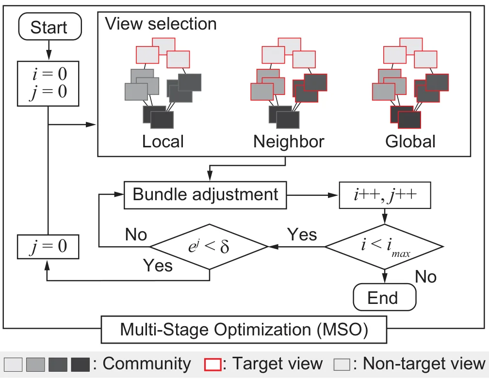
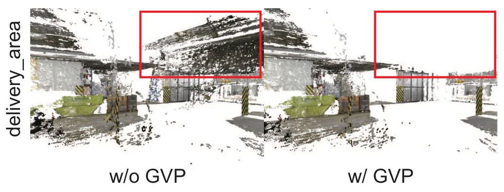
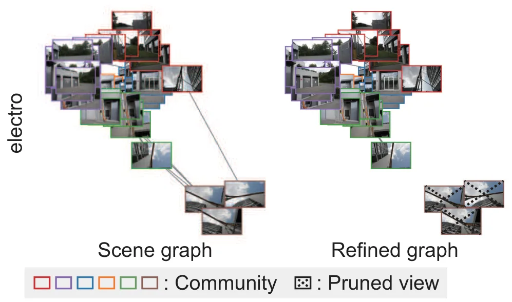
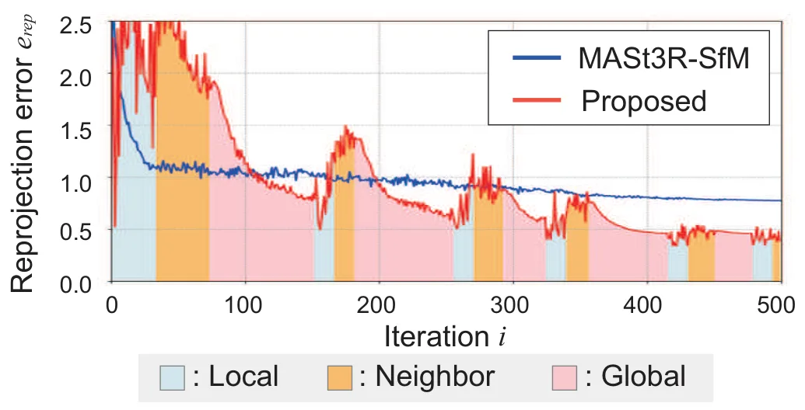
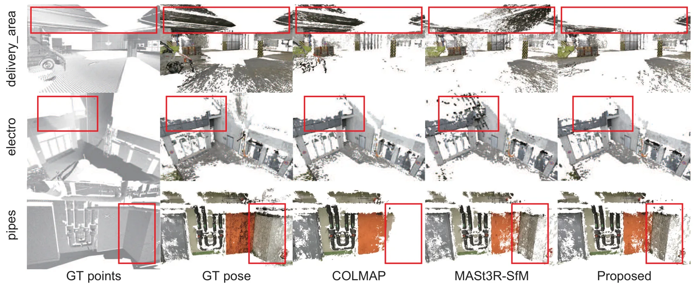
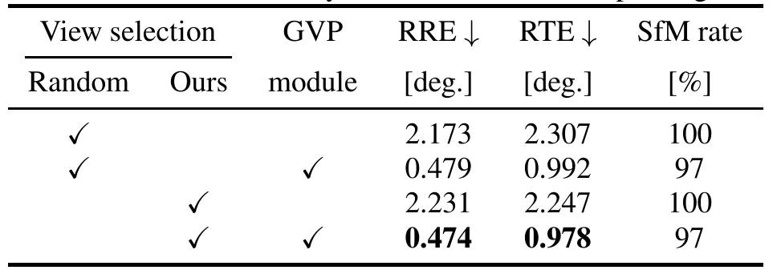
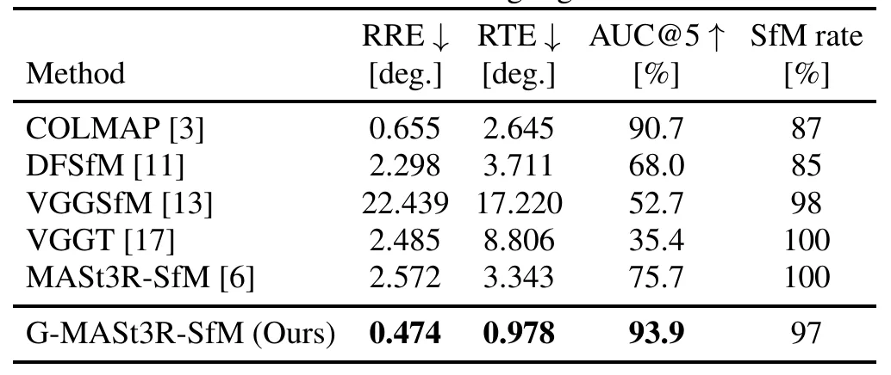
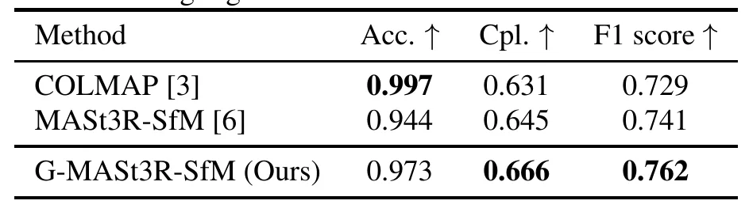

G-MASt3R-SfM：面向鲁棒 SfM 的图视角剪枝与多阶段优化G-MASt3R-SfM: Graph-based View Pruning and Multi-stage Optimization for Robust SfM
非常贴近三维重建/SfM 工程问题，尤其是新一代匹配器接入传统重建时的 outlier 处理；建议重点跟踪代码和与 COLMAP/hloc 的可集成性。
一句话工作总结
用场景图剪枝过滤 MASt3R 非重叠误匹配，并通过局部到全局的多阶段优化提升 SfM 位姿和重建鲁棒性。
摘要
MASt3R 等新型匹配方法在困难场景中很强，但也容易对非重叠图像对产生错误对应，导致 MASt3R-SfM 等直接把这些匹配输入优化的 pipeline 位姿估计退化。G-MASt3R-SfM 提出两个模块：Graph-based View Pruning 根据匹配置信度构造场景图并几何剪除离群视角；Multi-Stage Optimization 从局部一致性逐步扩展到全局一致性，逐阶段细化相机参数。ETH3D 实验显示其在相机位姿估计和三维重建上达到 SOTA，并有效抑制 outlier 噪声。
Structure from Motion (SfM) is essential for multi-view 3D reconstruction, however, its accuracy heavily relies on the accuracy of image matching. While the recent correspondence matching method, MASt3R, enables robust matching even under challenging conditions, it tends to generate incorrect correspondences for non-overlapping image pairs. Consequently, existing SfM methods using MASt3R, such as MASt3R-SfM, suffer from significant degradation in pose estimation accuracy as they incorporate these unreliable matches directly into optimization. To address this issue, we propose G-MASt3R-SfM, a novel SfM pipeline that enhances robustness through two key modules. First, the Graph-based View Pruning (GVP) module constructs a scene graph from matching confidence and geometrically prunes outlier views. Second, the Multi-Stage Optimization (MSO) module progressively refines camera parameters by expanding the optimization scope from local consistency to the global consistency. Experiments on the ETH3D dataset demonstrate that our method achieves state-of-the-art accuracy in both camera pose estimation and 3D reconstruction, effectively suppressing noise caused by outliers.
中文解读摘录
- 英文题名：Pocket-SLAM: Rendering-Area-Aware Pruning for Memory-Efficient 3DGS-SLAM
- 作者：Leshu Li, Jie Peng, Yang Zhao
- 类别/来源：cs.CV；comment: 2026 IEEE International Conference on Robotics and Automation (ICRA)；采集 score=17；阅读优先级=9.3/10。
- 一句话总结：用“对有效渲染区域的贡献”而不是单点 opacity/gradient 启发式来剪枝高斯，在保持定位/建图精度的同时显著降低 3DGS-SLAM 运行内存。
- 为什么值得看：这是今天最贴近 SLAM 主线的工作，直接面向大尺度/自动驾驶场景中 3DGS-SLAM 高斯点持续累积的问题；摘要报告 EuRoC/KITTI 上超过 60% 内存降低和 2 倍以上 FPS 提升，且给出了开源仓库地址。后续应复核其 pruning 触发策略、实时开销、对回环/长期地图维护的影响，以及和现有 keyframe/visibility 管理的关系。
- 标签：3DGS-SLAM、内存剪枝、实时建图、自动驾驶
- 链接：abs / PDF
图表/页面预览

{kind=link}

{kind=link}

{kind=link}

{kind=link}

{kind=link}

{kind=link}

{kind=link}

{kind=link}
